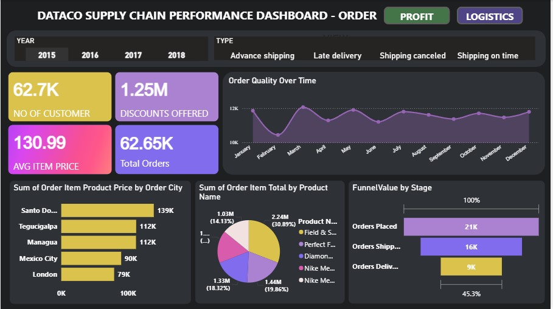
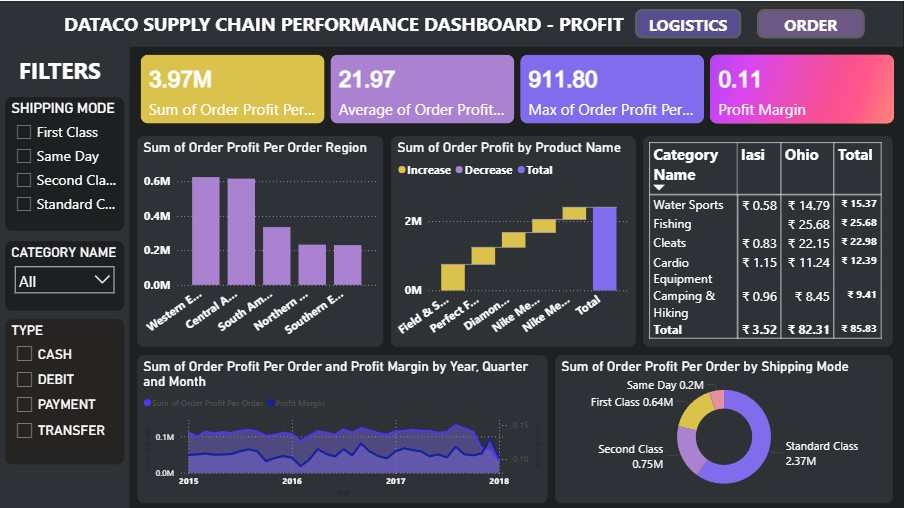
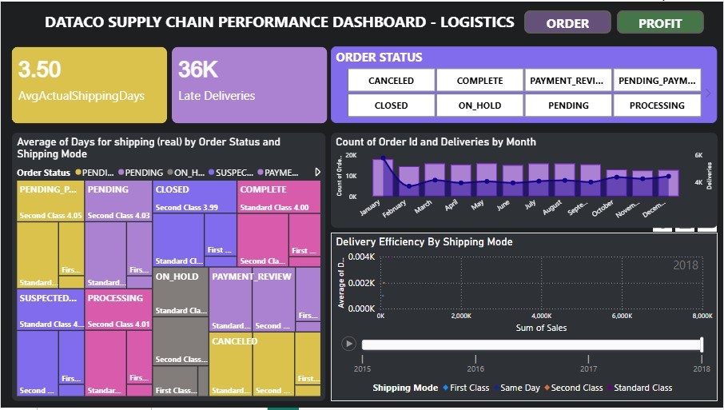

Project Overview
This project presents a supply chain dashboard designed to explore order performance, profitability, and logistics operations. Interactive visualizations help users understand key business metrics and identify trends in supply chain performance.
Dashboard Screenshots
Dashboard 1

Dashboard 2

Dashboard 3

Tools Used
Power BI Data Visualization Supply Chain AnalyticsKey Areas
- Order and sales performance
- Profitability analysis
- Shipping and logistics trends
- Interactive dashboard exploration